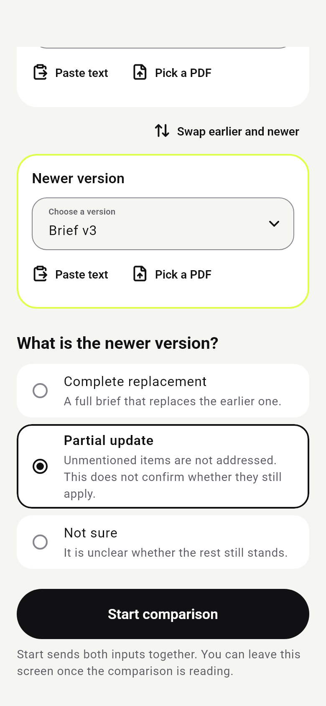
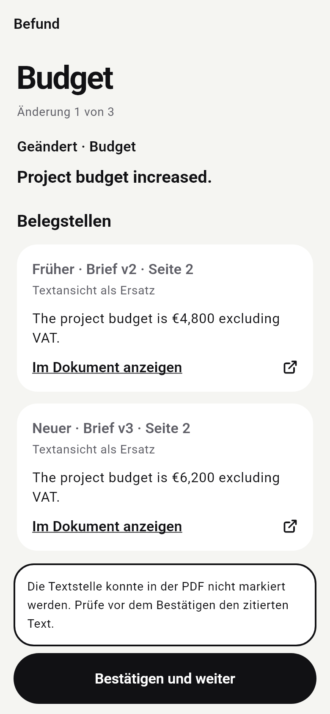

Frühere Version
Beispiel · Brief v2The project budget is €4,800 excluding VAT.
Final files are due on 20 November 2026.
The website includes five pages.
Hosting is provided by the client.
The project budget is €4,800 excluding VAT.
Final files are due on 20 November 2026.
The website includes five pages.
Hosting is provided by the client.
The project budget is €6,200 excluding VAT.
Final files are due on 27 November 2026.
The website includes seven pages.
4 Änderungen · 1 braucht einen zweiten Blick
3 Änderungen
Wähle oben eine Antwort. Welche Befunde hier stehen, hängt davon ab.
Früher · Brief v2The project budget is €4,800 excluding VAT.
Neuer · Brief v3The project budget is €6,200 excluding VAT.
Project budget increased.
Früher · Brief v2Final files are due on 20 November 2026.
Neuer · Brief v3Final files are due on 27 November 2026.
Final delivery moved.
Früher · Brief v2The website includes five pages.
Neuer · Brief v3The website includes seven pages.
Page count increased.
Früher · Brief v2Hosting is provided by the client.
Fehlt in einem vollständigen Ersatz. Das heißt nicht, dass es gestrichen ist.
Früher · Brief v2Hosting is provided by the client.
Eine teilweise Aktualisierung erwähnt es nicht. Es ist weder entfernt noch bestätigt.
Früher · Brief v2Hosting is provided by the client.
ChangeLens kann es nicht sicher erkennen. Prüfe es selbst.
Du wählst selbst die frühere und die neuere Version und gibst an, ob die neuere ein vollständiger Ersatz ist, eine teilweise Aktualisierung oder ob das unklar ist. Nichts ist vorausgewählt, und die Reihenfolge ergibt sich nie aus Upload-Zeit oder Dateinamen.
Es liest beide Eingaben ein, extrahiert Fakten, ordnet sie einander zu, vergleicht sie und prüft jedes Zitat gegen seine Quelle, bevor es etwas meldet.
Befunde sind nach Thema gruppiert. Unklare bleiben in der eigenen Gruppe „Von dir zu prüfen“, egal welcher Themenfilter aktiv ist. Jeder Befund öffnet sich mit seinen zitierten Textstellen; ein PDF öffnet sich mit markierter Stelle oder zeigt ersatzweise den ausgelesenen Text mit einem sichtbaren Hinweis.
Wenn du einen Befund bestätigst, korrigierst oder verwirfst, ist das deine eigene Prüfung. Eine Korrektur wird als neue Fassung gespeichert, das Original bleibt erhalten. Die Freigabe eines Kunden ist ein eigener Eintrag mit der Bezeichnung „Kundenfreigabe dokumentiert (von ChangeLens nicht überprüft)“.



